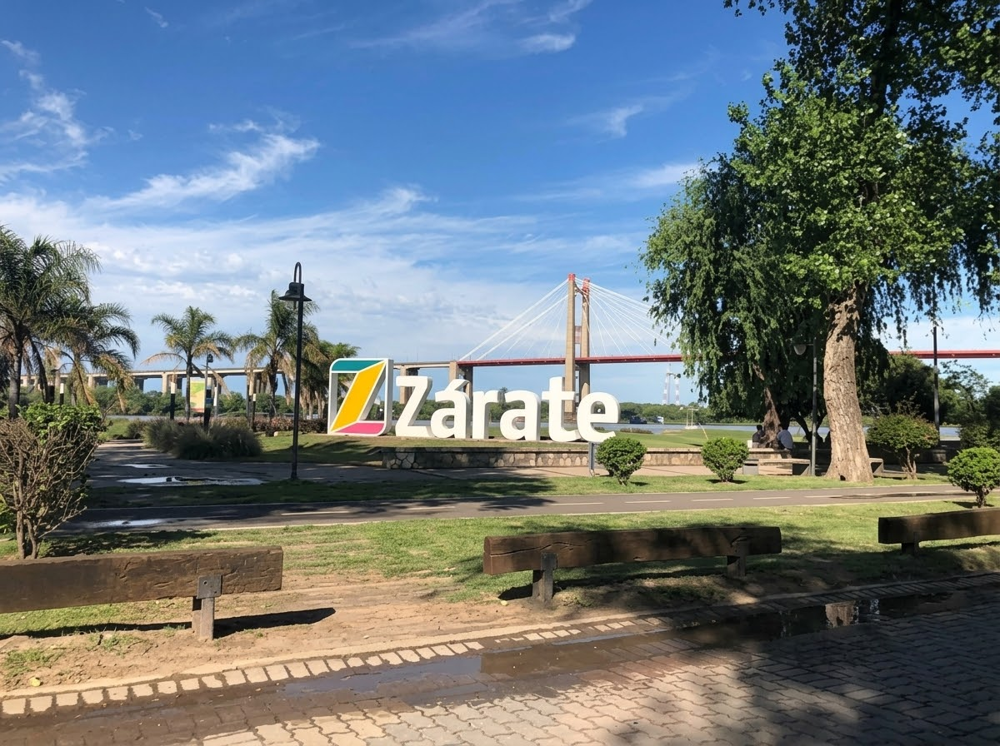
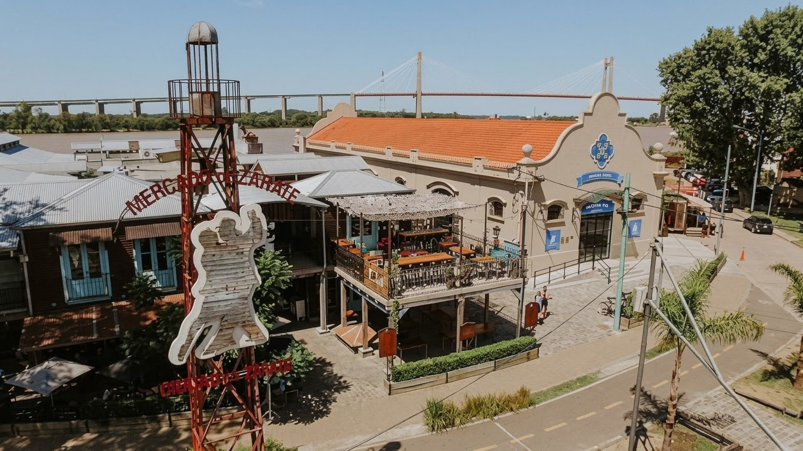
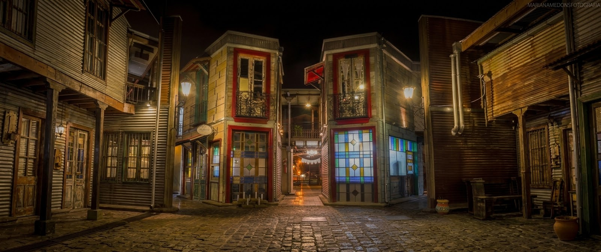

Paseo Costanera Zárate
Circuito costero con excelentes vistas al río Paraná y al puente Brazo Largo
Un paseo para disfrutar de la costanera y de las propuestas gastronómicas y al aire libre que ofrece Zárate.
- Mercado de Zárate: un polo gastronómico con propuestas variadas y mesas al aire libre.
- Ferias y food trucks: más opciones para disfrutar de un paseo al aire libre.